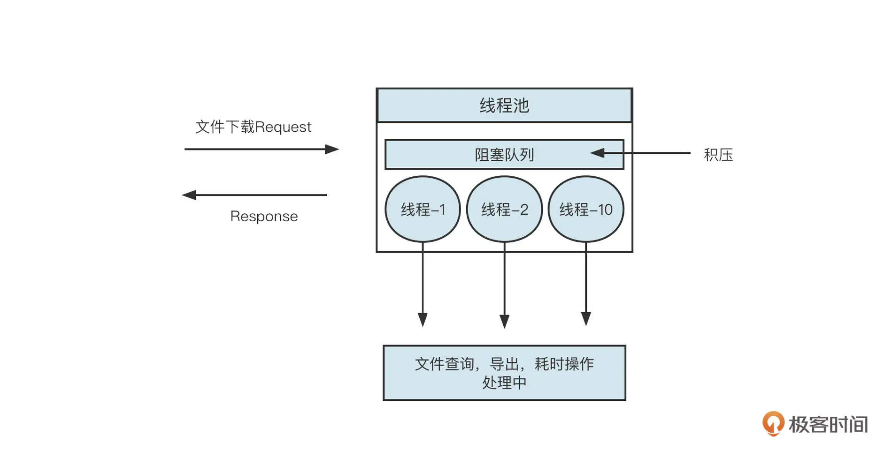
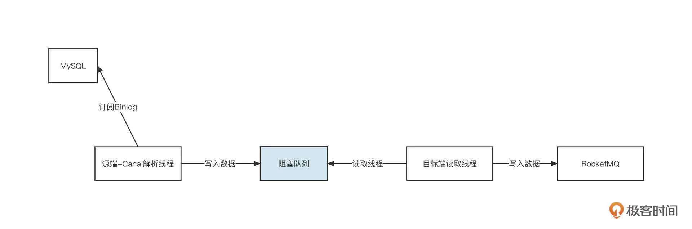
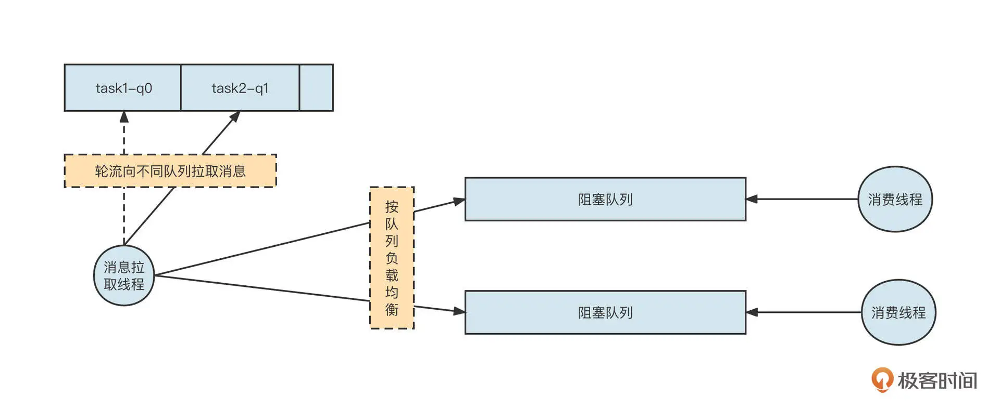
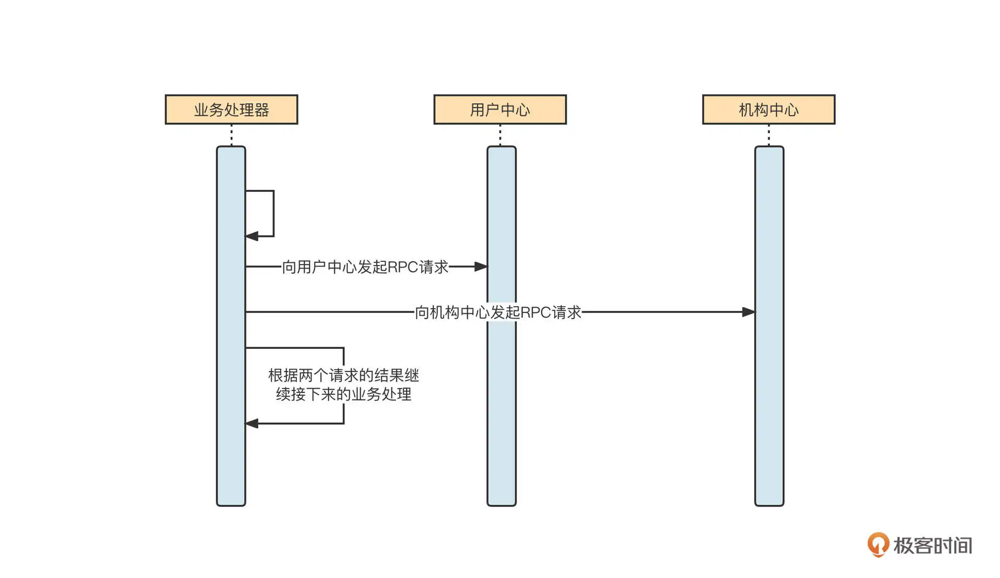
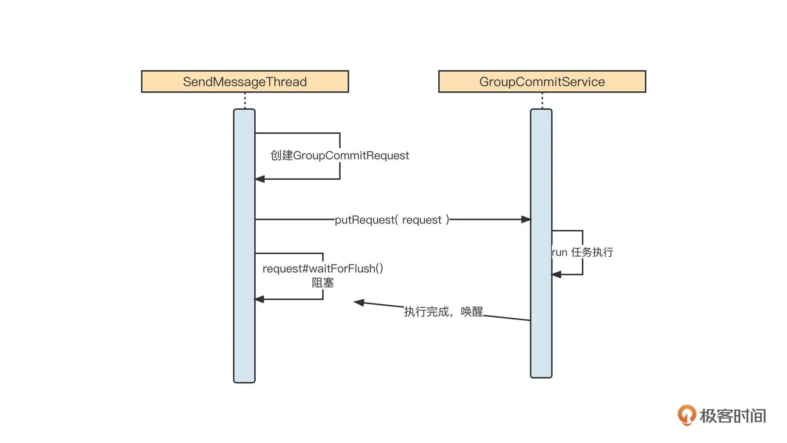
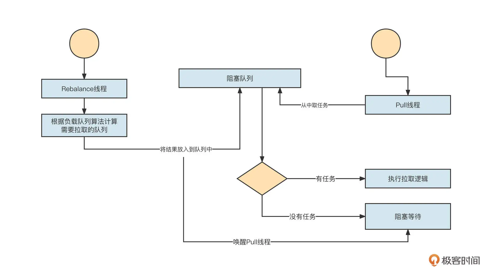

- 00 开篇词 为什么中间件对分布式架构体系来说这么重要？.md
- 01 中间件生态（上）：有哪些类型的中间件？.md
- 02 中间件生态（下）：同类型的中间件如何进行选型？.md
- 03 数组与链表：存储设计的基石有哪些？.md
- 04 红黑树：图解红黑树的构造过程与应用场景.md
- 05 多线程：多线程编程有哪些常见的设计模式？.md
- 06 锁：如何理解锁的同步阻塞队列与条件队列？.md
- 07 NIO：手撸一个简易的主从多Reactor线程模型.md
- 08 Netty：如何优雅地处理网络读写，制定网络通信协议？.md
- 08 加餐 中间件底层的通用设计理念.md
- 09 技术选型：如何选择微服务框架和注册中心？.md
- 10 设计原理：Dubbo核心设计原理剖析.md
- 11 案例：如何基于Dubbo进行网关设计？.md
- 12 案例：如何实现蓝绿发布？.md
- 13 技术选型：如何根据应用场景选择合适的消息中间件？.md
- 14 性能之道：RocketMQ与Kafka高性能设计对比.md
- 15 案例：消息中间件如何实现蓝绿？.md
- 16 案例：如何提升RocketMQ顺序消费性能？.md
- 17 运维：如何运维日均亿级的消息集群？.md
- 18 案例：如何排查RocketMQ消息发送超时故障？.md
- 19 案例：如何排查RocketMQ消息消费积压问题？.md
- 20 技术选型：分布式定时调度框架的功能和未来.md
- 21 设计理念：如何基于ZooKeeper设计准实时架构？.md
- 22 案例：使用分布式调度框架该考虑哪些问题？.md
- 23 案例：如何在生产环境进行全链路压测？.md
- 大咖助阵 高楼：我们应该如何学习中间件？.md
- 用户故事 学而时习之，不亦乐乎.md
- 用户故事 愿做技术的追梦人.md
- 用户故事 浪费时间也是为了珍惜时间.md
- 结束语 坚持不懈，越努力越幸运.md
05 多线程：多线程编程有哪些常见的设计模式？
你好，我是丁威。
从这节课开始，我们开始学习 Java 多线程编程。
多线程是很多人在提升技术能力的过程中遇到的第一个坎，关于这部分的资料在网络上已经很多了，但是这些资料往往只重知识点的输出，很少和实际的生产实践相挂钩。但是我不想给你机械地重复“八股文”，接下来的两节课，我会结合这些年来在多线程编程领域的经验，从实际案例出发，带你掌握多线程编程的要领，深入多线程的底层运作场景，实现理解能力的跃升。
如何复用线程？
线程是受操作系统管理的最核心的资源，反复创建和销毁线程会给系统层面带来比较大的开销。所以，为了节约资源，我们需要复用线程，这也是我们在多线程编程中遇到的第一个问题。那怎么复用线程呢？
我们先来看一小段代码：
Thread t = new Thread(new UserTask());
请你思考一下，这段代码会创建一个操作系统线程吗？
答案是不会。这段代码只是创建了一个普通的 Java 对象，要想成为一个真实的线程，必须调用线程的 start 方法，让线程真正受操作系统调度。而线程的结束和 run 方法的执行情况有关，一旦线程的 run 方法结束运行，线程就会进入消亡阶段，相关资源也会被操作系统回收。
所以要想复用线程，一个非常可行的思路就是，不让 run 方法结束。
通常我们会想到下面这种办法：
class Task implements Runnable {
@Override
public void run() {
while(true) {
if( shouldRun() ) {// 符合业务规则就运行
doSomething();
} else {
try {
//休眠1s,继续去判断是否可运行
Thread.sleep(1000);
} catch (InterruptedException e) {
e.printStackTrace();
}
}
}
}
private void doSomething() {
}
private boolean shouldRun() {
//根据具体业务规则进行判断
return false;
}
}
通过一个 while(true) 死循环确保 run 方法不会结束，然后不断地判断当前是否可以执行业务逻辑；如果不符合执行条件，就让线程休眠一段时间，然后再次进行判断。
这个方法确实可以复用线程，但存在明显的缺陷。因为一旦不满足运行条件，就会进行反复无意义的判断，造成 CPU 资源的浪费。另外，在线程处于休眠状态时，就算满足执行条件，也需要等休眠结束后才能触发检测，时效性会大打折扣。
那我们能不能一有任务就立马执行，没有任务就阻塞线程呢？毕竟，如果线程处于阻塞状态，就不会参与 CPU 调度，自然也就不会占用 CPU 时间了。
答案当然是可以的，业界有一种非常经典的线程复用模型：while 循环 + 阻塞队列，下面是一段示范代码：
class Task implements Runnable {
private LinkedBlockingQueue taskQueue = new LinkedBlockingQueue();
private AtomicBoolean running = new AtomicBoolean(true);
public void submitTask(Object task) throws InterruptedException {
taskQueue.put(task);
}
@Override
public void run() {
while(running.get()) {
try {
Object task = taskQueue.take(); // 如果没有任务，会使线程阻塞，一旦有任务，会被唤醒
doSomething(task);
} catch (Throwable e) {
e.printStackTrace();
}
}
}
public void shutdown() {
if(running.compareAndSet(true, false)) {
System.out.println(Thread.currentThread() + " is stoped");
}
}
private void doSomething(Object task) {
}
}
我们来解读一下。这里，我们用 AtomicBoolean 变量来标识线程是否在运行中，用 while(running.get()) 替换 while(true)，方便优雅地退出线程。
线程会从阻塞队列中获取待执行任务，如果当前没有可执行的任务，那么线程处于阻塞状态，不消耗 CPU 资源；一旦有任务进入到阻塞队列，线程会被唤醒执行任务，这就很好地保证了时效性。
那怎么停止一个线程呢？调用线程的 shutdown 方法一定能停止线程吗？
答案是不一定。 如果任务队列中没有任务，那么线程会一直处于阻塞状态，不能被停止。而且，Java 中 Thread 对象的 stop 方法被声明为已过期，直接调用并不能停止线程。那怎么优雅地停止一个线程呢？
原来，Java 中提供了中断机制，在 Thread 类中与中断相关的方法有三个。
-
public void interrupt()：Thread 实例方法，用于设置中断标记，但是不能立即中断线程。
-
public boolean isInterrupted()：Thread 实例方法，用于获取当前线程的中断标记。
-
public static boolean interrupted()：Thread 静态方法，用于获取当前线程的中断标记，并且会清除中断标记。
如果调用线程对象的 interrupt() 方法，会首先设置线程的中断位，这时又会出现两种情况：
-
如果线程阻塞在支持中断的方法上，会立即结束阻塞，并向外抛出 InterruptedException(中断异常)；
-
如果线程没有阻塞在支持中断的方法上，则该方法不能立即停止线程。
不过要说明的是，JUC 类库中的所有阻塞队列、锁、Object 的 wait 等方法都支持中断。
通常，我们需要在代码中添加显示的中断检测代码，我还是用前面的例子给出示例代码，你可以看一下：
static class Task implements Runnable {
private LinkedBlockingQueue taskQueue = new LinkedBlockingQueue();
private AtomicBoolean running = new AtomicBoolean(true);
public void submitTask(Object task) throws InterruptedException {
taskQueue.put(task);
}
@Override
public void run() {
while(running.get()) {
try {
Object task = taskQueue.take(); // 如果没有任务，会使线程阻塞，一旦有任务，会被唤醒
doSomething(task);
if(Thread.currentThread().isInterrupted()) {
//线程被中断，跳出循环，线程停止
break;
}
//这是一个耗时很长的方法
doSomething2(task);
} catch (Throwable e) {
e.printStackTrace();
}
}
}
public void shutdown() {
if(running.compareAndSet(true, false)) {
System.out.println(Thread.currentThread() + " is stoped");
}
}
private void doSomething(Object task) {
}
private void doSomething2(Object task) {
}
}
我们继续说回线程的复用。JUC 框架提供了线程池供我们使用。关于线程池相关的基础知识，你可以参考我之前的文章《如何评估一个线程池需要设置多少个线程》，这里我就不过多展开了。接下来，我就结合自己的工作经验分享一下怎么在实战中使用线程池。
我非常不建议你直接使用 Executors 相关的 API 来创建线程池，因为通过这种方式创建的线程池内部会默认创建一个无界的阻塞队列，一旦使用不当就会造成内存泄露。
我更推荐你使用 new 的方式创建线程，然后给线程指定一个可阅读的名称：
ThreadPoolExecutor executor = new ThreadPoolExecutor(5, 5, 0, TimeUnit.MILLISECONDS,
new LinkedBlockingQueue<>(), new ThreadFactory() {
private AtomicInteger threadNum = new AtomicInteger(0);
@Override
public Thread newThread(Runnable r) {
Thread t = new Thread(r);
t.setName("pull-service-" + threadNum.incrementAndGet());
return t;
}
});
这样，当系统发生故障时，如果我们想要分析线程栈信息，就能很快定位各个线程的职责。例如，RocketMQ 的消费线程我就会以“ConsumeMessageThread_”开头。
使用线程池另一个值得关注的问题是怎么选择阻塞队列，是使用无界队列还是有界队列。
通常，我们可以遵循这样的原则：对于 Request-Response 等需要用户交互的场景，建议使用有界队列，避免内存溢出；对于框架内部线程之间的交互，可以根据实际情况加以选择。
我们通过几个例子来看一下具体的场景。
项目开发中通常会遇到文件下载、DevOps 的系统发布等比较耗时的请求，这类场景就非常适合使用线程池。基本的工作方式如图：

在与用户交互的场景中，如果几十万个文件下载请求同时提交到线程池，当线程池中的所有线程都在处理任务时，无法及时处理的请求就会存储到线程池中的阻塞队列中。这就很容易使内存耗尽，从而触发 Full-GC，导致系统无法正常运作。
因此，这类场景我建议使用有界队列，直接拒绝暂时处理不了的请求，并给用户返回一条消息“请求排队中，请稍后再试”，这就保证了系统的可用性。
**在一个线程或多个线程向一个阻塞队列中添加数据时，通常也会使用有界队列。**记得我在开发数据同步产品时，为了实现源端与目标端线程，就采用了阻塞队列，下面是一张示意图：

为了实现 MySQL 增量同步，Canal 线程源源不断地将 MySQL 数据写入到阻塞队列，然后目标端线程从队列中读取数据并写入到 MQ。如果写入端的写入速度变慢，阻塞队列中的数据就变得越来越多，一旦不加以控制就可能导致内存溢出。所以，为了避免由于写入端性能瓶颈造成的整个系统的不可用，这时候需要引入有界阻塞队列。这样，队列满了之后，我们就能让源端线程处于阻塞状态，从而对源端进行限流。
但在选择阻塞队列时还可能有另外一种情况，那就是一个线程对应多个阻塞队列，这时我们一般会采用无界阻塞队列 +size 的机制，实现细粒度限流。当时，我设计的 RocketMQ 消费模型是下面这样：

一个拉取线程轮流从 Broker 端队列 (q0、q1) 中拉取消息，然后根据队列分别放到不同的阻塞队列中，每一个阻塞队列会单独分配单个或多个线程去处理。
这个时候，采用有界队列可能出现问题。如果我们采用有界队列，一旦其中一个阻塞队列对应的下游消费者处理性能降低，阻塞队列中没有剩余空间存储消息，就会阻塞消息发送线程，最终造成另外一个任务也无法拉取新的消息。显然，这会让整体并发度降低，影响性能。
那如果采用无界队列呢？单纯使用无界队列容易导致内存泄露，触发更严重的后果，好像也不是一个好的选择。
其实我们可以在无界队列的基础上额外引入一个参数，用它来控制阻塞队列中允许存放的消息条数。当阻塞队列中的数据大于允许存放的阔值时，新的消息还可以继续写入队列，不会阻塞消息发送线程。但我们需要给消息拉取线程一个反馈，暂时停止从对应队列中拉取消息，从而实现限流。
阻塞队列是多线程协作的核心纽带，除了清楚它的使用方法，我们还应该理解它的使用原理，也就是 “锁 + 条件等待与唤醒”。我们来看一下 LinkedBlockingQueue 的 put 的实现代码：
public void put(E e) throws InterruptedException {
if (e == null) throw new NullPointerException();
int c = -1;
Node<E> node = new Node<E>(e);
final ReentrantLock putLock = this.putLock;
final AtomicInteger count = this.count;
putLock.lockInterruptibly(); // @1
try {
while (count.get() == capacity) { // @2
// private final ReentrantLock putLock = new ReentrantLock();
// private final Condition notFull = putLock.newCondition();
notFull.await(); // @3
}
enqueue(node); // @4
c = count.getAndIncrement();
if (c + 1 < capacity)
notFull.signal();
} finally {
putLock.unlock();
}
if (c == 0)
signalNotEmpty();
}
这里，我重点解读一下关键代码。
第 8 行：我们要申请锁，获取队列内部数据存储结构 (LinkedBlockingQueue 底层结构为链表) 的修改控制权，也就是让一个阻塞队列同一时刻只能操作一个线程。
第 10 行：判断队列中元素的数量是否等于其最大容量，如果是，则线程进入到条件等待队列 (第 13 行)，调用 put 的线程会释放锁进入到阻塞队列。当队列中存在空闲空间时，该线程会得到通知，从而结束阻塞状态进入到可调度状态。
队列中有可用空间之后，线程被唤醒，但是不能立即执行代码（第 15 行），它需要重新和其他线程竞争锁，获得锁后将数据存储到底层数据结构中。关于锁的底层原理，我们会在下节课详细介绍。
这里也请你思考一下：为什么上面的代码我们要采用 while(count.get() == capacity) 而不使用 if(count.get() == capacity) 呢？
多线程编程常用的设计模式
如果你刚开始学习多线程编程，可能会觉得这个问题很难。不过不用担心，业界大佬早就总结出了很多和多线程编程相关的设计模式。接下来，我就带你一起看看其中应用最广的几个。
Future 模式
多线程领域一个非常经典的设计模式是 Future 模式。它指的是主线程向另外一个线程提交任务时，无须等待任务执行完毕，而是立即返回一个凭证，也就是 Future。这时主线程还可以做其他的事情，不会阻塞。等到需要异步执行结果时，主线程调用 Future 的 get 方法，如果异步任务已经执行完毕，则立即获取结果；如果任务还没执行完，则主线程阻塞，等待执行结果。
Future 模式的核心要领是将多个请求进行异步化处理，并且可以得到返回结果。我们来看一个示例：

当一个请求在处理时，需要发起多个远程调用，并且返回多个请求，再根据结果进行下一步处理。它的伪代码如下：
Object result1 = sendRpcToUserCenter(); // @1
Object result2 = sendRpcToOrgCenter(0); // @2
Object result = evalBusiness(result1,result2);
说明一下，在不使用 Future 模式的情况下，两个远程 RPC 调用是串行执行的。例如，第一个请求需要 1s 才能返回，第二个请求需要 1.5s 才能返回，这两个过程就需要 2.5s。为了提高性能，我们可以将这两个请求进行异步处理，然后分别得到处理结果。这就到了 Future 模式发挥作用的时候了。
**业务开发领域通常会采用线程池的方式来实现 Future 模式，**你可以看下具体的实现代码：
package net.codingw.jk02;
import java.util.concurrent.Callable;
import java.util.concurrent.ExecutorService;
import java.util.concurrent.Executors;
import java.util.concurrent.Future;
public class FutureTask {
static class Rpc2UserCenterTask implements Callable<Object> {
@Override
public Object call() throws Exception {
return sendRpcToUserCenter();
}
private Object sendRpcToUserCenter() {
// 具体业务逻辑省略
return new Object();
}
}
static class Rpc2OrgCenterTask implements Callable<Object> {
@Override
public Object call() throws Exception {
return sendRpcToOrgCenter();
}
private Object sendRpcToOrgCenter() {
// 具体业务逻辑省略
return new Object();
}
}
public static void main(String[] args) throws Exception {
// 生产环境建议使用 new ThreadPoolExecutor方式创建线程池
ExecutorService executorService = Executors.newFixedThreadPool(5);
// 发起
Future<Object> userRpcResultFuture = executorService.submit(new Rpc2UserCenterTask()); //异步执行
Future<Object> orgRpcResultFuture = executorService.submit(new Rpc2OrgCenterTask()); // 异步执行
Object userRpcResult = userRpcResultFuture.get(); // 如果任务未执行完成，则该方法会被阻塞，直到处理完成
Object orgRpcResult = orgRpcResultFuture.get(); // 如果任务未执行完成，则该方法会被阻塞，直到处理完成
doTask(userRpcResult, orgRpcResult);
}
private static void doTask(Object userRpcResult, Object orgRpcResult) {
// doSomeThing
}
}
我们还是解读一下这段代码的要点。
-
首先，我们需要创建一个线程池。
-
接着，要将需要执行的具体任务进行封装，并实现 java.util.concurrent.Callable 接口 (如上述代码中的 Rpc2UserCenterTask)，并重写其 Call 方法。
-
然后将一个具体的任务提交到线程池中去执行，返回一个 Future 对象。
-
在想要获取异步执行结果时，可以调用 Future 的 get 方法。如果任务已经执行成功，则直接返回；否则就会进入阻塞状态，直到任务执行完成后被唤醒。
因为线程池是一个较重的资源，而中间件领域的开发追求极致的性能，所以在中间件开发领域通常不会直接使用线程池来实现 Future 模式。
RocketMQ 会使用 CountDownLatch 来实现 Future 模式，它的设计非常精妙，我们先一起来看一下它的序列图：

可以看到，SendMessageThread 会首先创建一个 GroupCommitRequest 请求对象，并提交到刷盘线程，然后发送线程阻塞，等待刷盘动作完成。刷盘线程在执行具体刷盘逻辑后，会调用 request 的通知方法，唤醒发送线程。
乍一看，主线程提交刷盘任务之后并没有返回一个 Future，那为什么说这是 Future 模式呢？这就是 RocketMQ 的巧妙之处了。它其实是把请求对象当作 Future 来使用了。我们来看一下 GroupCommitRequest 的实现代码：
public static class GroupCommitRequest {
private final long nextOffset;
private final CountDownLatch countDownLatch = new CountDownLatch(1);
private volatile boolean flushOK = false;
public GroupCommitRequest(long nextOffset) {
this.nextOffset = nextOffset;
}
public long getNextOffset() {
return nextOffset;
}
public void wakeupCustomer(final boolean flushOK) {
this.flushOK = flushOK;
this.countDownLatch.countDown();
}
public boolean waitForFlush(long timeout) {
try {
this.countDownLatch.await(timeout, TimeUnit.MILLISECONDS);
return this.flushOK;
} catch (InterruptedException e) {
e.printStackTrace();
return false;
}
}
}
在这里，GroupCommitRequest 中的 waitForFlush 方法相当于 Future 的 get 方法。具体实现是，调用 CountDownLatch 的 await 方法使自己处于阻塞状态，然后当具体的刷盘线程完成刷盘之后，通过调用 wakeupCustomer 方法，实际上调用了 CountDownLatch 的 countDown 方法，实现唤醒主线程的目的。
基于 CountDownLatch 实现的 Future 模式非常巧妙，更加得轻量级，性能也会更好。不过要说明的是，在业务开发领域，直接使用线程池将获得更高的开发效率和更低的使用成本。
生产者 - 消费者模式
Future 模式就说到这里，我们再来看看多线程编程领域中最常见的设计模式：生产者 - 消费者模式。
程序设计中一个非常重要的思想是解耦合，在 Java 设计领域也有一条重要的设计原则就是要职责单一。基于这些原则，通常一个功能需要多个角色相互协作才能正常完成。
生产者 - 消费者模式正是这种思想的体现，它的理论也很简单，我们这里不会深入介绍。但我想用 RocketMQ 举一个实操的例子。
在 RocketMQ 消费线程模型中，应用程序在启动消费者时，首先需要根据负载算法进行队列负载，然后消息拉取线程会根据负载线程计算的结果有针对性地拉取消息。交互流程如下图所示：

Rebalace 线程作为生产者，会根据业务逻辑生成消息拉取任务，然后 Pull 线程作为消费者会从队列中获取任务，执行对应的逻辑；如果当前没有可执行的逻辑，Pull 线程则会阻塞等待，当生产者将新的任务存入到阻塞队列中后，Pull 线程会再次被唤醒。
系统的运行过程中会存在很多意料之外的突发事件，在高并发领域更是这样。所以在进行系统架构设计时，我们必须具备底线思维，对系统进行必要的兜底，防止最坏的情况发生，这里最常见的做法就是采用限流机制。
所以在这节课的最后，我们一起来看看并发编程领域如何实现限流。
线程池自带一定的限流效果，因为工作线程数量是一定的，线程池允许的最大并发也是确定的。一旦达到最大并发，新的请求就会进入到阻塞队列，或者干脆被拒绝。不过这节课我想给你介绍另一种限流的方法：使用信号量。
我们先来看一个具体的示例：
public static void main(String[] args) {
Semaphore semaphore = new Semaphore(10);
for(int i = 0; i < 100; i++) {
Thread t = new Thread(new Runnable() {
@Override
public void run() {
doSomething(semaphore);
}
});
t.start();
}
}
private static void doSomething(Semaphore semaphore) {
boolean acquired = false;
try {
acquired = semaphore.tryAcquire(3000, TimeUnit.MILLISECONDS);
if(acquired) {
System.out.println("执行业务逻辑");
} else {
System.out.println("信号量未获取执行的逻辑");
}
} catch (Throwable e) {
e.printStackTrace();
} finally {
if(acquired) {
semaphore.release();
}
}
}
这段代码非常简单，其实就是通过信号量来控制 doSomething 方法的并发度，使用了信号量的两个主要的方法。
-
tryAcquire：这种方法是尝试获取一个信号，如果当前没有剩余的许可，过了指定等待时间之后会返回 false，表示未获取许可；
-
release：归还许可，该方法必须在 tryAcquire 方法返回 true 时调用，不然会发生“许可超发”。
但是如果场景再复杂一点，比如 doSomething 是一个异步方法，前面这段代码的效果就会大打折扣了。如果 doSomething 的分支非常多，或者遇到异步调用等复杂情况下，归还许可将变得非常复杂。
因为在使用信号量时，如果多次调用 release，应用程序实际的并发数量会超过设置的许可值。所以避免重复调用 release 方法显得非常关键。RocketMQ 给出的解决方案如下：
public class SemaphoreReleaseOnlyOnce {
private final AtomicBoolean released = new AtomicBoolean(false);
private final Semaphore semaphore;
public SemaphoreReleaseOnlyOnce(Semaphore semaphore) {
this.semaphore = semaphore;
}
public void release() {
if (this.semaphore != null) {
if (this.released.compareAndSet(false, true)) {
this.semaphore.release();
}
}
}
public Semaphore getSemaphore() {
return semaphore;
}
}
这套方案的核心思想是对 Semaphore 进行一次包装，然后将包装对象（SemaphoreReleaseOnlyOnce）传到业务方法中。就像上面这段代码，其中的 doSomething 方法无论调用 release 多少次都可以保证底层的 Semaphore 只会被释放一次。
SemaphoreReleaseOnlyOnce 的 release 方法引入了 CAS 机制，如果 release 方法被调用，就使用 CAS 将 released 设置为 true。下次其他线程再试图归还许可时，由于状态为 true，所以不会再次调用 Semaphore 的 release 方法，这样就可以有效控制并发数量了。
总结
好了，这节课就讲到这里。
这节课一开始，我们就讲了一个大家在多线程编程中常会遇到的问题：如何复用线程？我们重点介绍了线程池这种复用方法。它的内部的原理是采用 while + 阻塞队列的机制，确保线程的 run 方法不会结束。在有任务执行时运行任务，无任务运行时则通过阻塞队列阻塞线程。我们还顺便讲了讲怎么通过中断技术优雅地停止线程。
使用线程池时，还有一个常见的问题就是怎么选择阻塞队列，我总结了下面三个小窍门：
-
Request-Response 等需要用户交互的场景，建议使用有界队列，避免内存溢出；
-
如果一个线程向多个队列写入消息，建议使用“无界队列 +size”机制，不阻塞队列；
-
如果一个线程向一个队列写入消息，建议使用有界队列，避免内存溢出。
这节课的后半部分，我们详细介绍了多线程领域 Future 模式、生产者 - 消费者模式的工作原理和使用场景。我还提到了高并发架构设计中的底线思维：限流机制。基于信号量来实现限流，在多线程环境中避免信号量的超发可以防止你踩到很多坑。
课后题
在课程的最后，我还是照例给你留两道思考题。
你是怎么理解 Future 模式的？又会怎么实现它呢？
场景题：有一家主要生产面包的工厂，但是工厂的仓库容量非常有限。一旦仓库存满面包，就没法生产新的面包了。顾客来购买面包后，仓库容量会得到释放。请你用 Java 多线程相关的技术实现这个场景。
完成这个场景可以让我们迅速理解多线程编程的要领，所以请你一定要重视第二题。如果你想要分享你的修改或者想听听我的意见，可以提交一个 GitHub的 push 请求或 issues，并把对应地址贴到留言里。我们下节课见！
© 2019 - 2023 Liangliang Lee. Powered by Vert.x and hexo-theme-book.